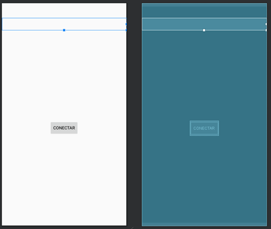

Laboratorio 12
Comunicación Android con base de datos en la nube
Objetivo:
Duración:
Ciento veinte (120) minutos.
Materiales y Herramientas:
Introducción
Una base de datos remota es una base de datos que se encuentra físicamente en otro sistema de servidor, a
diferencia de una base de datos local que se encuentra físicamente en el sistema del servidor local.
VENTAJAS
-
Eliminar costos y esfuerzos de enrutamiento de TI.
-
Potente, se puede ajustar la instancia de la base para permitir recursos completos, usar cachés de
memoria más grandes y permitir más ciclos de CPU.
-
Estable, el servidor de la base no afectará la disponibilidad de un servidor web local.
DESVENTAJAS
-
Velocidad, el tiempo de ida y vuelta de una solicitud de conexión o de consulta a la base es superior al
tiempo de una base local.
-
Seguridad, no puede ser controlado por un administrador propio, sino que depende exclusivamente de la
seguridad otorgada por el proveedor.
Investigación
Pregunta 1: ¿Con qué otro método es posible acceder a datos de Internet desde una app móvil?
Pregunta 2: Mencione al menos 3 páginas o servicios de internet que ofrecen el servicio de bases de datos
remotas. (Exceptuando la utilizada en la práctica)
Procedimiento
Paso 1: Acceso a una cuenta para el servicio de base de datos remoto
-
Acceder desde un navegador a la página www.000webhost.com.
-
Utilizar la base de datos empleada en la práctica 6
-
En caso de no recordar la contraseña de la base de datos, genere una nueva
Paso 2: Conexión a MySQL
-
Mediante el administrador de archivos, cree un archivo llamado conexion.php
-
Agregue el código de conexión usado en prácticas pasadas para conectarse con la base de datos.
-
Agregue el siguiente código para validar la conexión en el navegador Web.
$query = "SELECT * FROM Factura";
$result = mysqli_query($con, $query);
if(mysqli_num_rows($result) > 0){
echo "Acceso exitoso";
}
else{
echo "Tabla Factura vacía";
}
mysqli_free_result($result);
mysqli_close($con);
-
En el navegador inicie su página web con el archivo conexion.php y muestre el resultado, junto al código
editado del literal b) del paso 2.
Paso 3: Creación de la aplicación móvil
-
Crear un nuevo proyecto con el nombre lab10TLM.
-
Diseñar un layout que contenga un textview(sin texto) que abarque el ancho de la aplicación y en la
parte inferior un botón que sea Conectar.

-
En la clase main crear el atributo para de tipo textview, el cual debe ser asignado al componente que se
diseñó en el literal anterior en la función onCreate y otro atributo de tipo String para almacenar la
URL.
private String server = "https://XXXXXXXX.000webhostapp.com/conexion.php";
private TextView consulta;
-
Dentro de la carpeta com.example.lab10tlm, crear una nueva clase llamada AsyncQuery que herede de la
clase AsyncTask<String[],Void,String[]></String>
-
Sobrescribir la función doInBackground con el siguiente código:
Arrreglo1[]={“login”, “www.000webhost.com”};
doInBackground(arreglo1)
protected String[] doInBackground(String[]... datos) {//[“login”, “URL”]
String[] totalResultadoSQL = null;
String type = datos[0][0];
String login_url = datos[0][1];
if(type.equals("login")){
try {
URL url = new URL(login_url);
HttpURLConnection httpURLConnection = (HttpURLConnection)url.openConnection();
httpURLConnection.setRequestMethod("POST");
httpURLConnection.setDoInput(true);
InputStream iStr = httpURLConnection.getInputStream();
BufferedReader bR = new BufferedReader(new InputStreamReader(iStr,"UTF-8"));
String resultado="";
String line="";
while((line = bR.readLine()) != null){
resultado += line + System.getProperty("line.separator") ;
}
bR.close();
iStr.close();
httpURLConnection.disconnect();
totalResultadoSQL = new String[]{
resultado
};
} catch (MalformedURLException e ) {
e.printStackTrace();
} catch (IOException e) {
e.printStackTrace();
}
}
return totalResultadoSQL;
}
-
Crear una función llamada conectar en la clase Main para asignarle al botón.
public void conectar(View view){
String[] resultado = null;
try {
String[] datos = new String[]{
"login",
server
};
AsyncQuery async = new AsyncQuery();
resultado = async.execute(datos).get();
consulta.setText(resultado[0]);
} catch (ExecutionException e) {
e.printStackTrace();
} catch (InterruptedException e) {
e.printStackTrace();
}
}
-
Dar permisos de acceso a Internet en el archivo Manifest.
Paso 4: Ejecución de un query específico
-
Crear un nuevo archivo php con el nombre query1, con el siguiente código adicional al código de
conexión.
$query = $_POST["SQL"];
$result = mysqli_query($con, $query);
$filas = mysqli_num_rows($result);
$columnas = mysqli_num_fields($result);
$resultado = "Cantidad de filas: ".$filas."\r\n";
$resultado .= "Cantidad de columnas: ".$columnas."\r\n";
if($filas > 0){
$i=0;
while ($column = mysqli_fetch_field($result)) {
$resultado .= $column->name . "\t|";
}
$resultado .= "\r\n";
while($row = mysqli_fetch_array($result)){
for($i=0;$i<$columnas;$i++){
$resultado .= $row[$i]."\t|";
}
$resultado .= "\r\n";
}
}
else{
echo "Tabla vacía\r\n";
}
echo $resultado;
mysqli_free_result($result);
mysqli_close($con);
-
Agregar un botón adicional para ejecutar el query con el nombre consulta y colocar el siguiente código.
Deberá agregar un PlainText e inicializarlo en una variable llamada query de tipo EditText para
que el usuario ingrese el query, adicional deberá agregar una variable con el nombre
serverConsulta e inicializarla con la dirección del archivo query1.php
public void consulta(View view){
String[] resultado = null;
try {
String[] datos = new String[]{
"query",
serverConsulta,
query.getText().toString()
};
AsyncQuery async = new AsyncQuery();
resultado = async.execute(datos).get();
consulta.setText(resultado[0]);
} catch (ExecutionException e) {
e.printStackTrace();
} catch (InterruptedException e) {
e.printStackTrace();
}
}
-
Agregar un else if a la función doInBackground con el siguiente código:

else if(type.equals("query")){
try {
String query = datos[0][2];
URL url = new URL(login_url);
HttpURLConnection httpURLConnection = (HttpURLConnection)url.openConnection();
httpURLConnection.setRequestMethod("POST");
httpURLConnection.setDoOutput(true);
httpURLConnection.setDoInput(true);
OutputStream outputStream = httpURLConnection.getOutputStream();
BufferedWriter bufferedWriter = new BufferedWriter(new OutputStreamWriter(outputStream, "UTF-8"));
String postdata = URLEncoder.encode("SQL","UTF-8")+"="+URLEncoder.encode(query,"UTF-8");
bufferedWriter.write(postdata);
bufferedWriter.flush();
bufferedWriter.close();
outputStream.close();
InputStream inputStream = httpURLConnection.getInputStream();
BufferedReader bufferedReader = new BufferedReader(new InputStreamReader(inputStream,"UTF-8"));
String resultado="";
String line="";
while((line = bufferedReader.readLine()) != null){
resultado += line + System.getProperty("line.separator");
}
bufferedReader.close();
inputStream.close();
httpURLConnection.disconnect();
totalResultadoSQL = new String[]{
resultado
};
} catch (MalformedURLException e ) {
e.printStackTrace();
} catch (IOException e) {
e.printStackTrace();
}
}
RETO 1 (15 puntos): Modifique el diseño y la programación para que el usuario no ingrese comandos SQL como se
realizó en la práctica, sino que indique el nombre de la Tabla que quiere consultar y un campo opcional para
especificar una validación. Ej.
RETO 2 (15 puntos): Modifique el diseño y la programación para que los resultados obtenidos de la consulta no se
muestren en un TextView, sino dentro de una tabla.